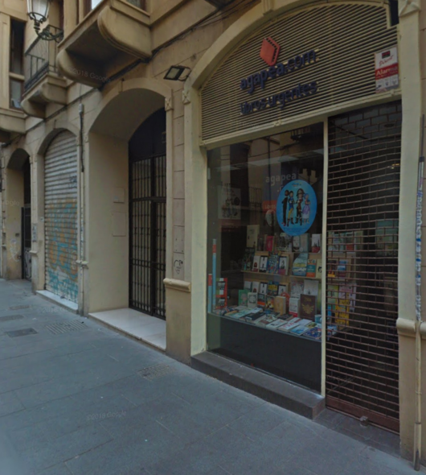
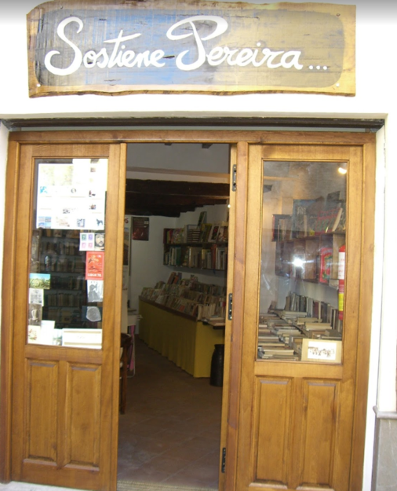
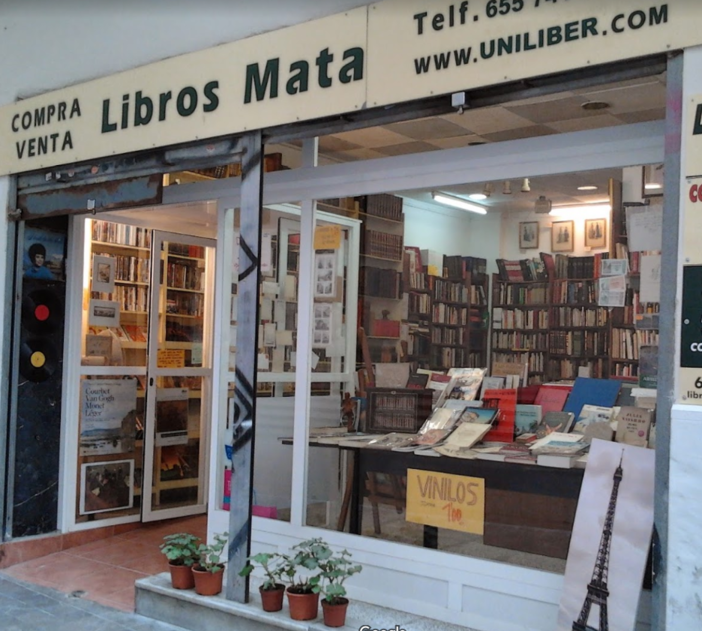
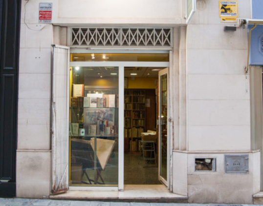

Tiendas en Granada.
| Agapea Granada | Sostiene Pereira |
|---|---|
| Calle Puentezuelas, 28, 18002 Granada  | Calle Horno de la Merced, 4, 18010 Granada  |
Tiendas en Malaga.
| Librería Mata y León | Libreria Anticuaria Antonio Mateos |
|---|---|
| Calle San Juan, 24, local derecho, 29005 Málaga  | Calle Esparteros, 11, 29005 Málaga  |